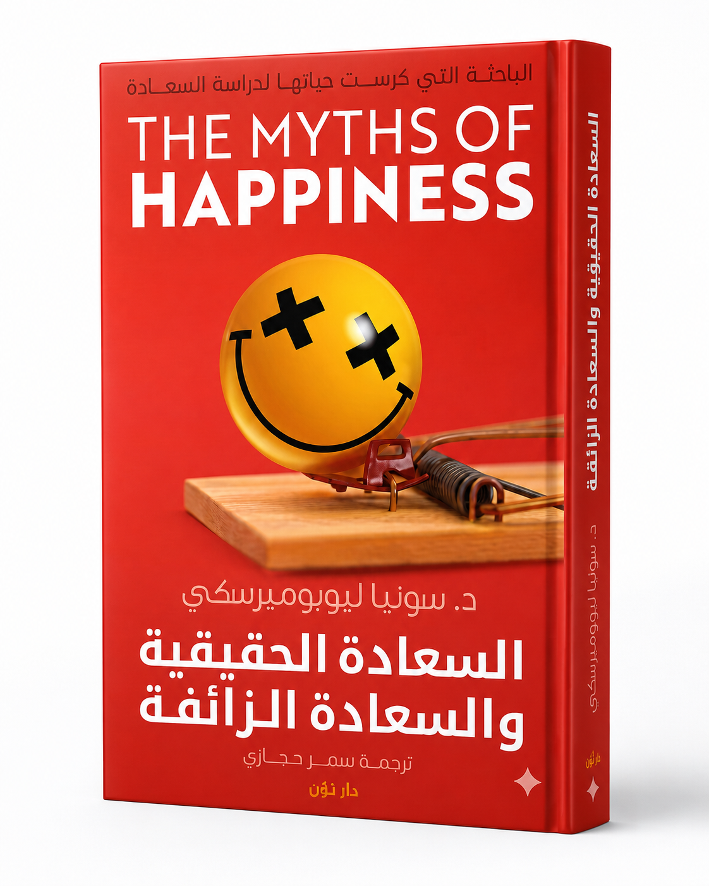

علم النفس والمجتمع — كتاب
السعادة الحقيقية والسعادة الزائفة
The Myths of Happiness1,600 دج
تدحض الباحثة النفسية الأساطير الشائعة حول مصادر السعادة وتقدم بدائل علمية مستندة إلى أبحاث موثقة لبناء سعادة حقيقية ومستدامة.
✓المؤلف: سونيا ليوبوميرسكي
✓المترجم: سمر حجازي
✓سنة النشر: 2013
✓التصنيف: علم النفس والمجتمع
✓توصيل لجميع ولايات الجزائر الـ 58
🚚 التوصيللكل الجزائر
💳 الدفعمسبق أو عند الاستلام
📚 الجودةكتب مختارة
📖 عن الكتاب
هل الزواج يجلب السعادة الدائمة؟ هل الثروة تضمنها؟ هل النجاح المهني يكفي؟ تجيب المؤلفة على هذه الأسئلة بأدلة علمية صارمة تكسر التوقعات الاجتماعية السائدة، وتُقدّم خريطة طريق نحو سعادة حقيقية ومستدامة بعيدة عن الأوهام الشائعة.
📦 معلومات الطلب والتوصيل
- طريقة الدفع: مسبق (CCP / BaridiMob) أو عند الاستلام
- مدة التوصيل: من 24 إلى 72 ساعة لجميع ولايات الجزائر (قد تطول في الولايات الجنوبية النائية)
- الضمان: ضمان كامل — استرجاع المال في حال وجود مشكلة
- السعر: 1,600 دج